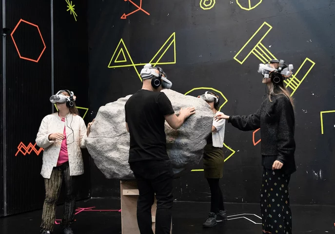

I designed and implemented sound effects using Wwise and Unity. Worked closely together with SØS Gunver Ryberg in implementing her compositions through a combination of ambisonics and object-based audio within Wwise middleware.
Four guests are let in at a time for this exclusive experience which is both physical and virtual. After an entering ritual you physically walk around in a big live installation where a multisensorial death opera is taking place.
Inspired by necroaesthetic aspects of death, the artistic team has developed six versions of death which you get to try. You travel through the cold, the heavy, the dirty, the distorted and get close to the full decomposition – before life rises from the ashes again.

Mortalities is a necroaesthetic VR opera, investigating the intersection between VR, performance and opera. The work, besides challenging the format of opera by offering a novel virtual opera, examines the borders between life and death, and between live and digital. Without our characteristic ability to transcend and form ideas about death, the reality is unanchored and without purpose. The theme is inspired by Mikkel Krause Frantzen’s theory on ’necroaesthetics’ presented in his text ’Ligvariationer’ (Mortalities). Necroaesthetics is not necessarily the story of an actual death, but tries to present the state where boundaries between life and death are negotiable - and with the development of technology, even more so. According to Frantzen, three components constitutes a necroaesthetic work: the affectivity of grief, a paradoxical temporality and a spectral materiality.
Cultural researcher Jakob Matzen suggests looking at death from a range of different perspectives. He divides necroaesthetics into six categories: the spectral, grotesque, transcendental, self-destructive, post-human and architectonic necroaesthetics.
“…en intens oplevelse, der gør det, opera gerne vil: erobre dig hundredeprocent” <3 <3 <3 <3 <3 Politikken
Concept & Artistic Direction REBEKKA SOFIE BOHSE MEYER Composition of Electronic Music, Choir & Voices SØS GUNVER RYBERG Visual Artist / Design of Environment and Characters NINNA STEEN Libretto URSULA ANDKJÆR OLSEN Animation & Choreography NINNA STEEN VR Development MANND VR Producion MARIA HERHOLDT ENGERMANN VR Lead Technic JEPPE JOST ETZERODT 3D Modelling & 3D Animation QUAD STUDIO Audio Implementation & Sound Effects FREDERIK LA COUR VFX Artist BASTIAN LEONHARDT STRUBE Vocal Recording Engineer OLIVER MATTHEW VOLZ Text Consultants KATRINE JENSEN, ORIEN LONGO Costume WINNIE CHRISTIANSEN, MARIA IPSEN Mask Design & Production TRINE THULSTRUP Props NIELS LAU NIELSEN Producer LARS VIND-ANDERSEN Stage Managing SIGNE THORNBERG Communications and SoMe intern EMILIE MARIE PEDERSEN Production Company JAKOBE PERFORMING ARTS Co-Production SORT/HVID, COPENHAGEN OPERA FESTIVAL
Live singers ANNE-KRISTINE SKOV ANDERSEN, KATINKA MARIE FRIDA BOHSE MEYER, KIRSTEN VOSS Singers VR ANNE-KRISTINE SKOV ANDERSEN, KIRSTEN VOSS, STEPHEN YESETA, MATHIAS MONRAD MØLLER, MIKKEL TUXEN Solos composed through improvisation with the singers
Thanks to MIKKEL KRAUSE FRANTZEN, JAKOB MATZEN, MIXR LAB, NIIMBLR, ARTFREQ STUDIO, PAVILLION K, JEREMY PAYNE-FRANK, TINE MEYER, SOFIE MIETKE, MIKA YUNUS BERGER SAHBAZ
Funded by STATENS KUNSTFOND, BIKUBENFONDEN, AUGUSTINUS FONDEN, WILLIAM DEMANT FONDEN, WILHELM HANSEN FONDEN, DANSK KOMPONISTFORENING, DANSK SKUESPILLERFORBUND, DANSK SOLISTFORBUN
sound designer/ audio programmer/ virtual reality/ game audio/